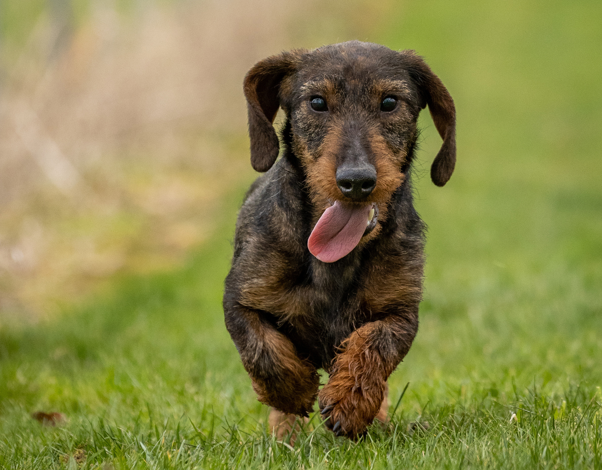

Known as the Dachshund in Germany and the Tekel across much of Europe — three coats, one legendary long dog.
"Tekel" — the beloved Dutch, Afrikaans & Turkish name for the Dachshund
Choose a Variety
Smooth-Haired
The Classic Smooth
Sleek, low-maintenance, and dynamic. The traditional short coat highlights the iconic elongated silhouette.
Explore variety
Long-Haired
The Elegant Long
Sleek, wavy locks and a soft, calm demeanor. Known for their beautiful feathering on the ears and tail.
Explore variety
Wire-Haired
The Spirited Wire
Distinguished bushy eyebrows and a cheeky beard. Packed with a clownish and energetic personality.
Explore variety
Smooth-Haired
The Smooth Tekel
💡
Quick Fact: The smooth coat is the original variant bred specifically for easily slipping into narrow underground dens without getting stuck.
The smooth-haired Dachshund is the quintessential representation of the breed. Their coat is short, dense, and shining, requiring minimal grooming. Bold and confident, these little companions are exceptionally loyal and possess a large-dog bark packed into a compact body.
Grooming
Low
Energy
Medium-High
Temperament
Brave & Loyal
Long-Haired
The Long-Haired Tekel
💡
Quick Fact: It is widely believed that the long-haired variety was originally created by crossing the smooth variety with various spaniels.
Boasting a soft, elegant coat with dramatic feathering on the ears, chest, and tail, the long-haired variety is often considered the gentlest and most easy-going of the three types. Their stunning appearance matches their sweet, affectionate nature.
Grooming
High
Energy
Medium
Temperament
Gentle & Sweet

Wire-Haired
The Wire-Haired Tekel
💡
Quick Fact: Developed later by introducing Terriers (like the Schnauzer), this coat offers maximum protection against harsh brush and briars.
Characterized by their rugged, wire-like outer coat, iconic beard, and expressive eyebrows, wire-haired Dachshunds are full of mischievous charm. They have a distinct terrier-like grit, making them incredibly playful, curious, and stubborn.